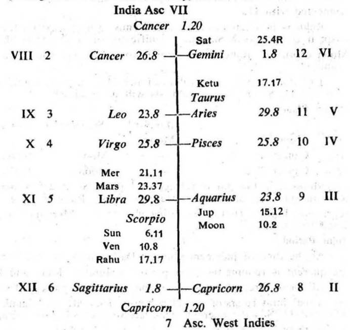

Question. Whether India will win the 1st Cricket Test Match against West Indies which is being played at Bangalore in India? (Query on behalf of India).
Number. 65 (out of 249)
Place of Judgment. 23°N 2′, 72°E 35′.
Time of Judgment. 22-11-1974, Friday; 12-35 P.M. I.S.T.

In cases of competition and contest between two rival parties in any walk of life viz. cricket match etc., if the cuspal sub lord of the 11th (success) and that of the 6th (defeat to the rival) occupy the house 1, 2, 3, 6, 10 or 11 and be in the star of the occupant of the house 1, 2, 3, 6, 10 or 11 the team under query will win the cricket match.
Cusp XI. The sub lord of XI cusp is Sun. It occupies XI. It is in the star Saturn the occupant of VI; and it is in the sub Mercury the occupant of X. So it is the significator of VI and connected with X and XI. Hence it is favourable to the West Indies Team.
Cusp VI. The sub lord of VI cusp is Mercury the occupant of X. It is in the star and sub Jupiter the occupant of II. So it is the significator of II and connected with X. Hence it is advantageous to the West Indies Team.
11th Cusp. The sub lord of the 11th cusp is Mars. It occupies the 4th. It is in the star Jupiter the occupant of the 8th and it is in the sub Saturn the occupant of the 12th. So it is the significator of 8 and connected with 4 and 12. Thus it is unfavourable to the Indian Team.
6th Cusp. The sub lord of the 6th cusp is Venus the occupant of the 5th. It is in the star Saturn the occupant of the 12th and it is in its own sub. So it is the significator of 12 and connected with 5. Thus it is disadvantageous to the Indian Team.
In view of the above position the West Indies Cricket Team will win the 1st Cricket Test Match against the Indian Cricket Team. In fact the West Indies Cricket Team won the match which was being played at Bangalore in India. from 22-11-1974 to 27-11-1974.
In this case Sun (the cuspal sub lord of XI) is in the star of retrograde Saturn. But Sun is the significator of VI the house under consideration. So the point of retrogradation does not come in the way of promising the matter signified by VI.